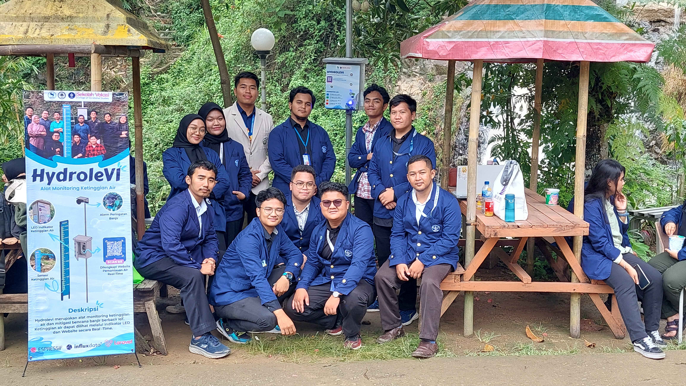
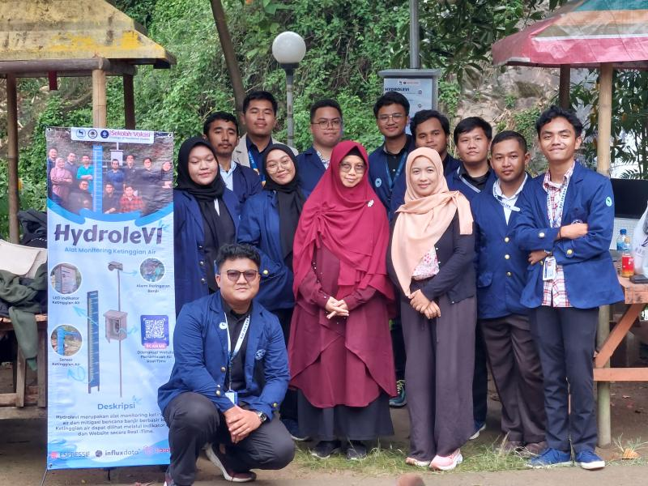

Featured Project — HydroleVI
A water level monitoring system located at Curug Cikoneng. Built with Internet of Things and magic.
Project Showcases
IoT-based Automatic Trash Bin Sorter
The SmartSort Bin automates waste separation using intelligent sensors to categorize wet, dry, and metal materials. Its IoT connectivity offers real-time fill-level data, streamlining collection and significantly improving recycling efficiency for a cleaner environment.
IoT Energy & Temperature Monitoring
ESP32 + PZEM-004T + DHT11 + Blynk for real‑time energy and temperature tracking with chart graphic.
Journal & Thesis Writing Showcase
Implementation of Mamdani Fuzzy Logic for Real-Time Monitoring of Electricity and Room Temperature Based on IoT 2025
Application of Mamdani fuzzy logic to analyze complex sensor data in order to improve the accuracy of energy inefficiency identification and provide optimization recommendations.
Implementation of User Centered Design Method on CarbonArea Website User Experience 2025
This study applies a User-Centered Design (UCD) approach to design the UI/UX for CarbonArea, a website monitoring CO2's impact on food security. The process, informed by user interviews, successfully delivered an engaging interface with interactive, real-time data features.
Designing User Interface on “HewanKu” Application Using User Centered Design Method 2025
This research designs the HewanKu livestock trading app's interface using User Centered Design (UCD) to enhance user experience. Combined with Black Box Testing, the method produced an intuitive, reliable, and user-trusted application for transactions.
Designing a Website-Based Inventory Information System at'NeoSkin'Cosmetics Store Using User-Centered Design 2025
This research designs a web-based inventory system for NeoSkin cosmetics using a User Centered Design (UCD) approach. The system streamlines warehouse management and reporting, with functionality verified through Black Box Testing.
Implementing Fuzzy Logic to Forecast Electricity Usage Costs 2025
This research develops a Mamdani fuzzy logic model using Matlab to predict household electricity costs. Analyzing variables like house size, appliance usage, and income, it accurately forecasts expenses, demonstrating an effective tool for managing energy consumption.